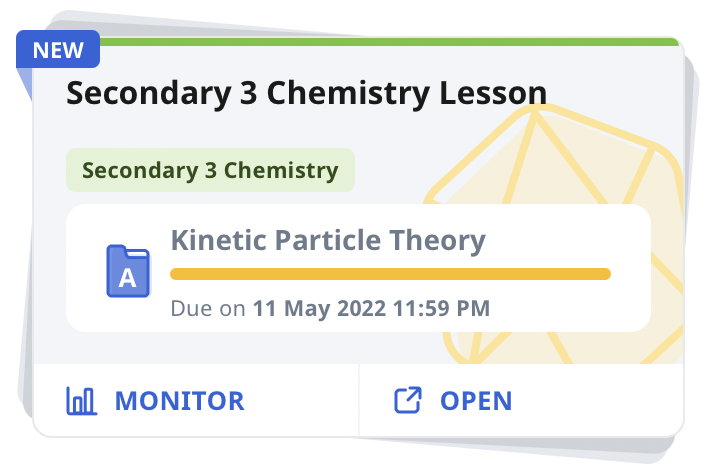
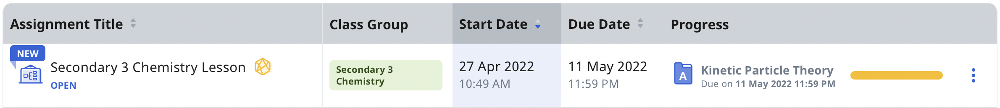

Gamification allows game-based elements to be introduced in your Course. The game-based elements introduced include Experience Points (XP) and Levels, Game Stories, and Achievements. You can award students with bonus XP for early submission of Assignments and penalise them by awarding lesser XP due to late submission and number of question retries.
Glossary of Terms
Experience Points (XP) - XP is awarded to students to measure their progress within the game. XP is converted from marks awarded to them in Assignments/Assessments.
Levels - Levels are dependent on the XP collected. When students collect enough XP, they can level up (progress to the next level).
Game Stories - Game Stories can be used to drive the narrative of a story and character development as the Course progresses.
Achievements - Achievements are rewards awarded to students after completing the tasks. This can come in the form of badges and trophies.
DID YOU KNOW?
Gamified Courses are indicated with the Gamification icon on Assignment Cards.

Example of a gamified Course on an Assignment Card.

Example of a gamified Course in the Assignment List view.
Video Tutorial - Add Gamification to Your Couse
Video Tutorial - Preview Gamification and Enable Leaderboard